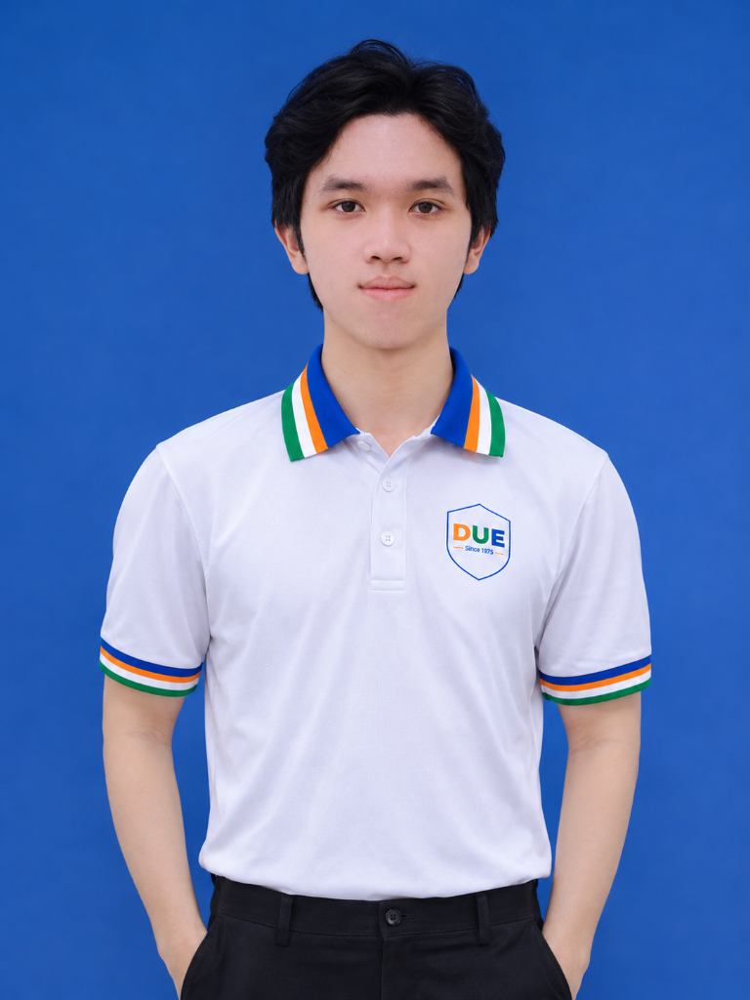
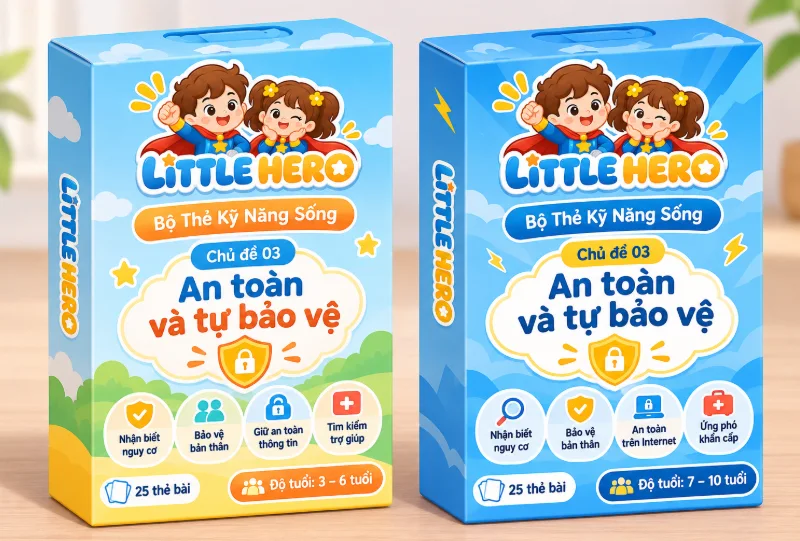
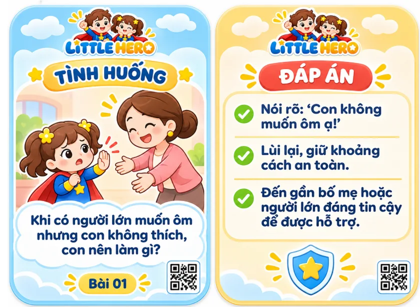
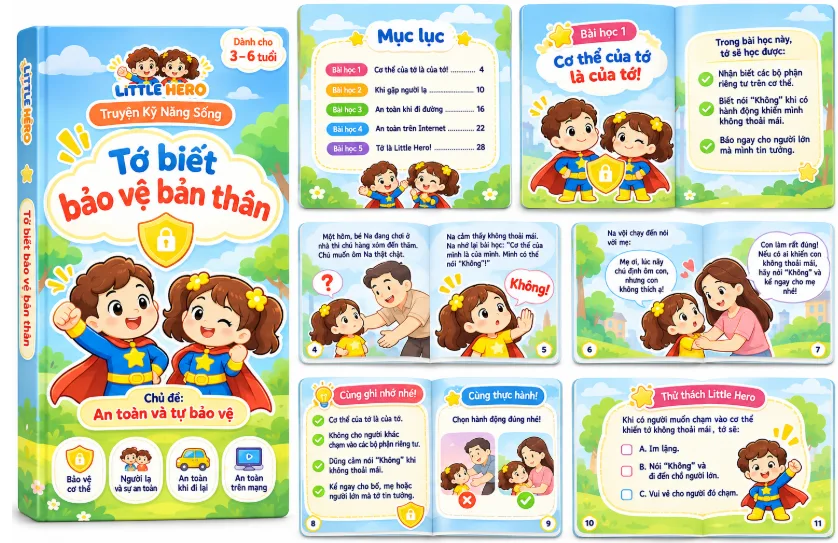
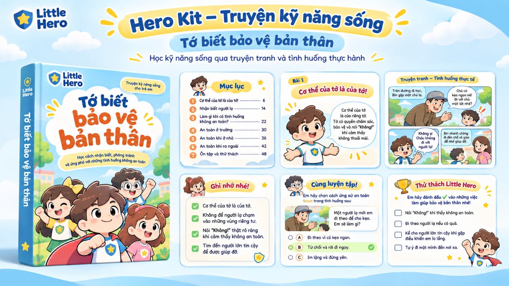
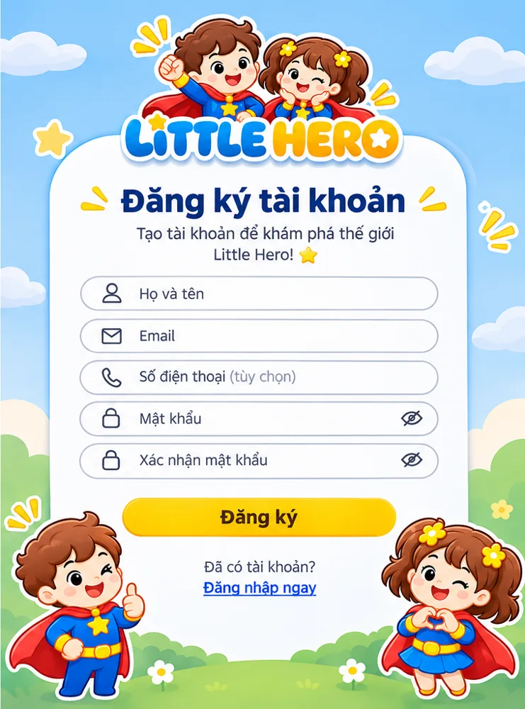

Võ Thị Bảo Ngọc
Project Lead · Trưởng nhóm
Định hướng chiến lược, phân chia đầu việc, kết nối các mảng công việc, điều phối tiến độ và tổng hợp phương án triển khai của đề án.
Little Hero hướng đến giúp trẻ 3–10 tuổi rèn luyện kỹ năng sống qua những câu chuyện, thẻ tình huống và trải nghiệm tương tác. Mỗi lựa chọn nhỏ là một cơ hội để trẻ học cách suy nghĩ và hành động.
Bốn sinh viên Trường Đại học Kinh tế – Đại học Đà Nẵng, cùng kết hợp tư duy kinh doanh, sáng tạo, truyền thông và công nghệ để phát triển dự án LITTLE HERO.
Định hướng chiến lược, phân chia đầu việc, kết nối các mảng công việc, điều phối tiến độ và tổng hợp phương án triển khai của đề án.
Nghiên cứu công chúng mục tiêu, xây dựng thông điệp, nội dung giới thiệu và định hướng truyền thông để đưa Little Hero đến gần phụ huynh.
Chuyển hóa ý tưởng thành hình ảnh thương hiệu, minh họa và trải nghiệm trực quan cho sách truyện, thẻ tình huống và nội dung số.

Nghiên cứu hướng ứng dụng công cụ số và AI, đề xuất trải nghiệm tương tác, hỗ trợ xây dựng nguyên mẫu giao diện và định hướng phát triển Hero World.
Khoảng cách giữa hiểu lời khuyên và ứng xử trong tình huống thực tế là điều Little Hero muốn giải quyết. Phụ huynh cũng gặp khó khăn trong việc chuẩn bị bài học, tạo tình huống và dành thời gian để thực hành cùng con.
Nhóm đã khảo sát 233 phụ huynh tại Đà Nẵng. Các tỷ lệ bên dưới là kết quả của chính mẫu khảo sát này, không phải thống kê đại diện cho toàn bộ phụ huynh Việt Nam.
Phụ huynh thiếu thời gian dạy con kỹ năng sống.
Phụ huynh khó tự xây dựng tình huống giáo dục.
Phụ huynh nhận thấy trẻ dễ chán cách học truyền thống.
Phụ huynh gặp khó khăn khi trẻ ngại chia sẻ hoặc ít nói.
Phụ huynh khó xác định trẻ có thực sự hiểu bài.
Nguồn số liệu 5 tỷ lệ: khảo sát do nhóm Little Hero thực hiện với 233 phụ huynh tại Đà Nẵng, được trình bày trong đề án VECOM 2026. Các bài viết dưới đây là tài liệu bối cảnh độc lập, không phải nguồn của năm tỷ lệ này.
Tài liệu hướng dẫn theo các nhóm tuổi, nhấn mạnh vai trò của người lớn trong việc giúp trẻ nhận biết rủi ro và hình thành kỹ năng an toàn số.
Đọc nguồn ↗Hướng dẫn Teaching with Care đề cao môi trường học tập an toàn, kỹ năng xã hội – cảm xúc và sự hợp tác của gia đình, trường học.
Đọc nguồn ↗Bài viết về khảo sát Tiếng nói Trẻ em Việt Nam 2024 cho thấy việc được tiếp cận kiến thức chưa đồng nghĩa với sự tự tin ứng phó rủi ro.
Đọc nguồn ↗Little Hero kết hợp học liệu vật lý với trải nghiệm số, để trẻ không chỉ đọc truyện mà còn thử suy nghĩ, đưa ra lựa chọn, quan sát hệ quả và trao đổi với người lớn.

Bộ học liệu dự kiến gồm sách truyện, thẻ tình huống và QR liên kết nội dung số. Hai phiên bản được thiết kế cho trẻ 3–6 và 7–10 tuổi.

Nền tảng web dự kiến kết nối với mã QR trên Hero Kit, hỗ trợ trẻ lựa chọn phương án xử lý, quan sát phản hồi theo kịch bản và thử lại.
Hình ảnh mẫu cho thấy hướng phát triển nội dung: trẻ nhận diện một tình huống cụ thể, được gợi ý ứng xử an toàn, rồi tiếp tục tìm hiểu qua sách và trải nghiệm số. Đây là các hình ảnh concept/mẫu thiết kế, không phải xác nhận sản phẩm đã phát hành thương mại.

Một ví dụ minh họa cách trẻ có thể sử dụng Hero Kit cùng Hero World dưới sự hướng dẫn của phụ huynh hoặc giáo viên.
Nhận diện nhân vật và tình huống gần gũi trong cuộc sống.
Trò chuyện với người lớn, suy nghĩ về những lựa chọn khác nhau.
Truy cập bài học số và lựa chọn hướng giải quyết tình huống.
Nhìn lại kết quả và thảo luận cách ứng xử phù hợp với thực tế.

AI Voice Chat là hướng phát triển nâng cao của Little Hero: trẻ có thể thực hành nói thành lời trong tình huống nhập vai, được hỗ trợ bằng câu hỏi gợi mở và phản hồi phù hợp với độ tuổi.
Đây là hội thoại minh họa theo kịch bản cố định; không thu âm hoặc gửi giọng nói.
Nhân vật đưa ra một bối cảnh ngắn, phù hợp với độ tuổi và được kiểm duyệt nội dung.
Ở phiên bản AI dự kiến, trẻ có thể trả lời bằng giọng nói; bản demo hiện chỉ hiển thị ví dụ.
Hệ thống định hướng đưa ra phản hồi an toàn, khuyến khích trẻ tìm người lớn đáng tin cậy khi cần.
Đội thi sử dụng AI như công cụ hỗ trợ xuyên suốt quá trình phát triển LITTLE HERO — từ hình thành ý tưởng, thử nghiệm hướng thiết kế đến xây dựng và hoàn thiện giao diện web.
Hỗ trợ khám phá ý tưởng hình ảnh, bố cục và phong cách minh họa cho học liệu, nhận diện dự án.
Hỗ trợ phân tích yêu cầu, phát triển nội dung, gợi ý và giải thích code, tìm hướng xử lý lỗi trong quá trình lập trình.
Kết hợp tự viết, chỉnh sửa và kiểm soát code với vibe coding để nhanh chóng tạo mẫu, thử giao diện và lặp lại theo mục tiêu. Nhóm chủ động rà soát, kiểm thử và hoàn thiện kết quả trước khi sử dụng.
Bộ nhận diện, thiết kế học liệu và trải nghiệm số minh họa được xây dựng để truyền tải tinh thần giáo dục qua lựa chọn nhỏ. Những hoạt động truyền thông trong kế hoạch sẽ được cập nhật khi triển khai thực tế.
Hai định hướng theo độ tuổi, đồng bộ hình ảnh thương hiệu.
Từ tình huống thường ngày đến câu hỏi và hoạt động thực hành.

Nguyên mẫu giao diện minh họa cho hệ sinh thái Little Hero.
Little Hero trân trọng ý kiến đóng góp, sự quan tâm và cơ hội kết nối với những người mong muốn phát triển giáo dục kỹ năng sống cho trẻ em.
Đại diện đội thi: Võ Thị Bảo Ngọc
Đơn vị: Trường Đại học Kinh tế – Đại học Đà Nẵng
Email: ngocamai16@gmail.com
Biểu mẫu xem trước, không gửi dữ liệu.